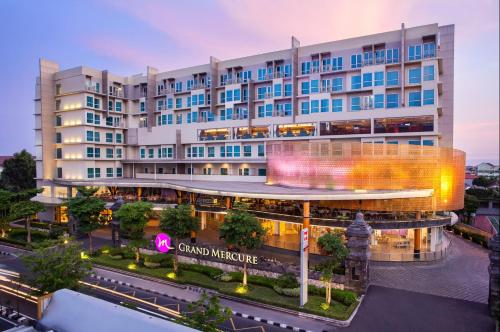
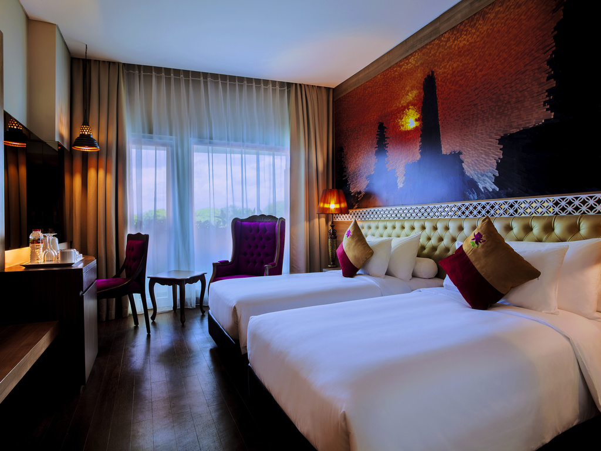
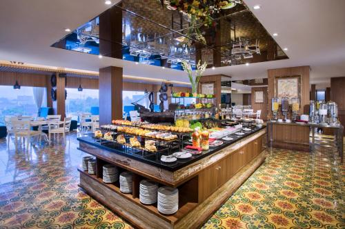

Pada edutrip ini saya berkesempatan menginap di dua hotel yang sama sama bagus, namun memiliki nuansa yang berbeda. Yaitu Hotel Grand Mercure Yogyakarta Adisucipto dan Novotel Solo. Tujuan resensi adalah untuk menilai dan mengulas Hotel Grand Mercure Yogyakarta Adisucipto.
Hotel Grand Mercure Yogyakarta Adisucipto adalah hotel yang besar, indah, dan lengkap. Dengan desain modern yang elegan, hotel ini memberikan kenyamanan bagi para tamu. Hotel ini memiliki total 305 kamar. Kamar-kamarnya luas dan dilengkapi dengan fasilitas seperti TV layar datar, kotak brankas, kulkas kecil, dan kamar mandi yang bersih dan nyaman. Beberapa kamar juga memiliki pemandangan kota yang menambah kesan menarik bagi tamu yang menginap.
Menginap di hotel ini sangat nyaman dan bersih. Setiap kamar di Hotel Grand Mercure Yogyakarta Adisucipto didesain dengan elegan dan modern. Kebersihan menjadi prioritas utama di hotel ini. Setiap bagian hotel, mulai dari lobi hingga kamar, kebersihannya selalu terjaga. Layanan house keeping bekerja dengan baik untuk memastikan kamar tetap rapi setiap hari. Selain itu, staf hotel yang ramah dan profesional siap membantu para tamu dengan segala kebutuhan mereka saat di restoran. Restoran terbuka setiap pagi sehingga para tamu dapat untuk makan pagi. Makanan-makanan yang disajikan sangat enak.
Dibandingkan dengan Novotel di Solo, kamar di Hotel Grand Mercure Yogyakarta Adisucipto lebih modern dan mewah, sedangkan kamar di Novotel Solo memiliki gaya klasik dengan variasi Jawa. Kamar di Grand Mercure menggunakan warna netral dan furnitur minimalis, sementara Novotel Solo lebih banyak menggunakan elemen kayu dengan dekorasi tradisional. Dari segi fasilitas, keduanya menyediakan TV, kulkas kecil, dan kamar mandi bersih, tetapi Grand Mercure lebih cocok bagi tamu yang menyukai gaya modern, sementara Novotel Solo lebih sesuai bagi mereka yang ingin merasakan suasana tradisional.
Memang, hotel ini lebih berfokus pada desain modern dan kurang menonjolkan unsur budaya lokal. Bagi wisatawan yang ingin merasakan nuansa khas Yogyakarta dalam akomodasi mereka, hotel ini mungkin terasa kurang memiliki sentuhan tradisional. Selain itu, meskipun fasilitasnya lengkap, harga menginap di sini cenderung lebih mahal dibandingkan hotel lain di kelasnya.
Secara keseluruhan, hotel ini sangat cocok untuk wisatawan bisnis maupun keluarga yang ingin menginap di tempat yang nyaman, modern, dan mewah. Dengan fasilitas yang lengkap dan pelayanan yang baik, Grand Mercure Yogyakarta Adisucipto adalah pilihan yang tepat bagi mereka yang mengutamakan kenyamanan dan kualitas saat berlibur atau berkunjung ke Yogyakarta.
  